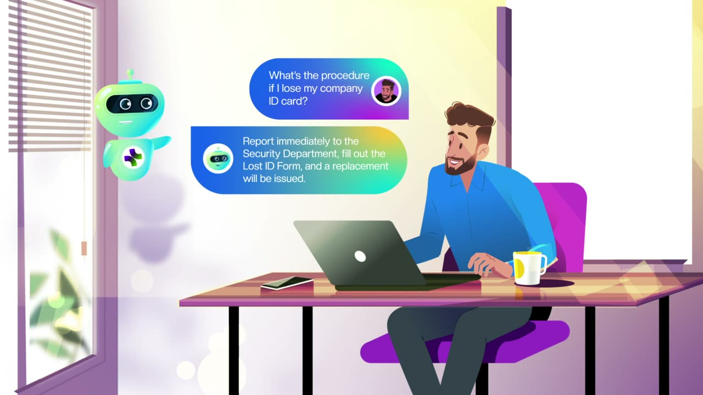

Custom AI systems
We pick one painful workflow and build an AI layer around it, connected to the tools you already use.
- WhatsApp lead and follow-up agents
- Customer support agents
- Internal knowledge copilots
- Dashboards and workflow automation
AI studio for Indian businesses
Seemara builds AI systems for Indian SMEs: WhatsApp lead agents, support agents, marketing engines and internal copilots. We also run two studios of our own: Aha Frames for animation and e-learning, and Kaizen for AI ad creatives.
Founded by Mamta Mor · Built for Indian SMEs
What Seemara offers
We pick one painful workflow and build an AI layer around it, connected to the tools you already use.

Animation and e-learning that makes it click: 2D and 3D video, e-learning and SCORM courses, and animated ads and reels.
Founded by Mamta Mor
Kaizen learns your brand once, then turns a business goal into reels, posters, captions and Meta-ready copy.
Custom AI systems
Each one starts as a small, working prototype and grows into a deeper operating layer for your team.
Collects requirements, qualifies leads, answers the basics and nudges follow-ups automatically.
Lead scoring, reminders, proposal drafts and personalised follow-ups, so no enquiry goes cold.
Campaign ideas, scripts, posters, captions and Meta-ready ad copy from your brand assets.
Answers customer questions using your products, policies and business rules.
Product listings, catalog images, offer creatives and content variants from the photos you have.
One place for your team to ask about processes, products, training and customer handling.
What changes
How a project runs
We learn your current process, tools, customers, team and the number that matters.
You see a real, working flow before anyone invests in something complicated.
WhatsApp, website, CRM, sheets, ecommerce, ads, documents or internal systems.
The system learns your preferences, exceptions and business reality over time.
Who we are
Mamta Mor is the founder of Seemara and of Aha Frames, its animation and e-learning studio. Seemara builds practical AI for Indian businesses, one useful workflow at a time.
From the blog
Why we started a studio for 2D, 3D, e-learning and ads, and what it makes.
AI systemsStart with one workflow, not a transformation project. Here's how to pick it.
KaizenThe problem isn't the video model. It's that the model doesn't know your brand.
Questions
Seemara was founded by Mamta Mor. She is also the founder of Aha Frames, Seemara's animation and e-learning studio.
Seemara builds custom AI systems for Indian small and medium businesses, such as WhatsApp lead agents, support agents, AI marketing engines and internal copilots. It also runs Aha Frames and Kaizen.
Aha Frames is Seemara's animation and e-learning studio, founded by Mamta Mor. It makes 2D and 3D video, e-learning and SCORM courses, and animated ads and reels. Visit ahaframes.com.
Kaizen is Seemara's AI ad-creative product. It learns your products, audience, voice and visual style, then turns a business goal into reels, posters, captions and Meta-ready copy.
No. Tell us where your team loses time, misses leads, repeats answers or struggles to create content. We map the workflow, build the AI layer and connect it to your tools.
Email mamta@seemara.com with a short note about your business and one workflow you want to improve.
Let's build
A short note about your business and the problem is enough. We'll reply with what a first AI system could look like.
mamta@seemara.com